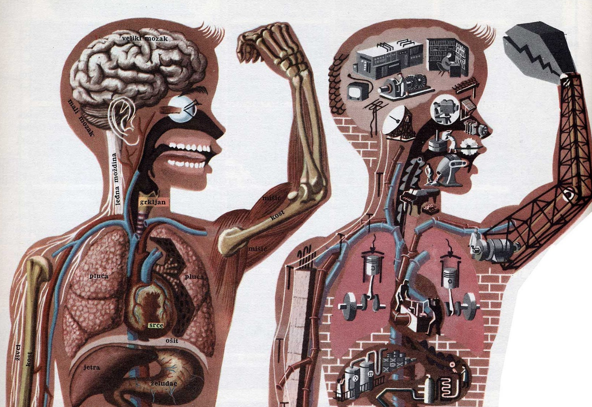

0.0 — MUSIC · FASHION · DATA
Sam·Malik
Loud Taste. Quiet Systems.
Just finished a data science degree at UW. Somehow lost a 100 pounds. Currently obsessed with: Rick Owens, Death Grips, Hedi Slimane, Nick Land, Stafford Beer, Sunn O))). Sweltering theory and glacial soundscapes. Hot data and cold pipelines. Big boots and skinny jeans. Equal parts Apollonian and Dionysian.
Currently working on
An analytics project that links my own body's data (DEXA scans, Apple Health, calorie logs) to population baselines to quantify DEXA measurement uncertainty, reconciling it with energy balance and aggregate data.

Approach
Ethos
How I connect data, technology, and culture. →
02The shelf
Reading
Last, current, next, and what I made of each. →
03Notebook
Writing
Short essays on data, music, and culture. →
04On rotation
Listening
Now playing, all-time favorites, recent ratings. →
05Track record
Doing
Education, roles, tools, and measurable impact. →
06Built things
Building
Pipelines, databases, models, and what I learned. →
0.1 — HOW I THINK ABOUT THE WORK
Data, technology, and culture are one loop.
I think of data, technology, and culture as one recursive feedback loop, each one constantly rewriting the next. Data engineering is how you step into that loop on purpose.
FIG. 0.1 — DATA → TECHNOLOGY → CULTURE → DATA
DATA → TECHNOLOGY. The data we collect ends up dictating the tools we build to handle it. Around 3400 BCE, Mesopotamian scribes were pressing grain tallies and labor records into clay, and the sheer volume of that accounting is what pushed them to invent cuneiform in the first place. The dataset created the technology.
TECHNOLOGY → CULTURE. Those tools then change how people live and what they treat as real. Double-entry bookkeeping in the 15th century was a data technology, and it helped make modern capitalism thinkable in the first place. The census, from Rome to the Domesday Book to today, turned populations into records, and in doing so it reshaped what it even meant to be a citizen of a state.
CULTURE → DATA. And culture decides what's worth recording at all, which closes the loop and changes what data exists in the first place. A society that decides something matters starts measuring it. A recommendation system turns your behavior into data, trains on it, and nudges the behavior it was measuring. Same loop the scribes started, just running faster.
None of this is new. Datafication is one of the constants of recorded human history. What's new is the speed and the stakes. Building data infrastructure means stepping into that loop, deciding what becomes legible and making sure the record stays honest about what it's actually measuring. That's the part I care about most.
0.2 — READING
What I'm reading.
Last, current, next, and what I made of each. The other input, alongside the records.
Loading the shelf…
0.3 — WRITING
Notes & essays.
Short writeups on data, music, and whatever I'm chewing on. The stuff that doesn't fit on a résumé.
Loading writing…
0.4 — LISTENING
The music.
My taste sits at two poles: warped, maximal rap on one side and the coldest end of black and drone metal on the other. Up top is whatever's actually playing right now, then the all-time list and what I've rated lately.
Connecting to Last.fm…
Favorite artists · all time
Recently rated
- Lucy Bedroque · Unmusique (2025)★★★★★29 NOV 2025
- Nine Inch Nails · The Downward Spiral (1994)★★★★½28 NOV 2025
- Jaja00 · BlackBolshevik (2021)★★★★★25 AUG 2025
- Clipse · Let God Sort Em Out (2025)★★★★★11 JUL 2025
- Playboi Carti · Music (2025)★★★★★14 MAR 2025
RATEYOURMUSIC
251 ratings and counting. The full archive of what I've been listening to, scoring, and overthinking lives on my RYM.
View my RYM →SYNCED FROM RYM · NOV 2025
0.5 — ROOMS FULL OF FOG
Concert log.
Some of the best rooms I've stood in. Featured: Sunn O))), Travis Scott, and Carcass.